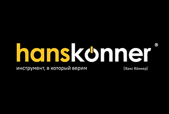

🔥 Ключ-трещотка Hanskonner — 1/2″, 90 зубьев Завершает тройку старший брат — 1/2″. Там, где младшим не хватает момента, а болт всё ещё упирается в…

MITEX 2026 · Россия · Стенд 7А15
Карточка проверена 10 ноября 2026, 09:28 · Источник ↗ · Снимок оригинальной карточки ↗
Hanskonner — российский бренд профессионального инструмента, разработанного для интенсивной эксплуатации в строительстве, ремонтных и монтажных работах. Техника Hanskonner рассчитана на ежедневные нагрузки, устойчиво работает в тяжёлых условиях и обеспечивает высокую производительность, надёжность и долгий срок службы. Сегодня Hanskonner — это целая экосистема решений для мастеров и профессионалов, где продумана каждая модель: от конструкции двигателя до эргономики рукоятки и дизайна. Философия бренда строится на трёх базовых принципах: качество, практичность и долгий срок службы. Каждый инструмент проходит многоступенчатую проверку. Благодаря такому подходу уровень брака у бренда остаётся одним из самых низких на рынке — менее 2% Hanskonner делает ставку на проверенные решения и сотрудничество с ведущими производителями комплектующих, создавая инструмент, рассчитанный на годы интенсивной эксплуатации. Ассортимент Hanskonner предлагает широкий выбор техники, охватывающей основные задачи профессионалов: Электроинструмент — от компактных шуруповёртов с аккумуляторной серией OneBatterySystem до мощных отбойных молотков. Ручной инструмент — от базовых слесарных решений до специализированного монтажного. Оснастка и расходные материалы — от сверл и пилок до абразивов и профессиональных принадлежностей. Садовая и силовая техника — от лёгких триммеров до насосов, мотопомп и генераторов. Системы хранения HanStorage — от компактных кейсов до модульных решений для организации рабочего пространства. Hanskonner делает акцент на долгосрочные отношения. Для бренда важно не только качество инструмента, но и высокий уровень сервиса. Все запчасти и расходники находятся в свободном доступе. Работает широкая сеть сервисных центров по всей России. Предоставляется расширенная гарантия и оперативное обслуживание. Это означает, что пользователь всегда может рассчитывать на поддержку. Hanskonner активно завоёвывает доверие российских мастеров. Это бренд для тех, кто ценит результат, работает в сложных условиях и выбирает инструмент, которому можно доверять каждый день.
Контакты Адрес офиса Телефон: 8 (800) 775-50-60 E-mail: info@sturmtools.ru Адрес: 127083, Россия, Москва, 127083, г. Москва, ул. 8 марта, д. 1, стр. 12, БЦ "Трио", 2 корпус, 9 этаж Веб-сайт: https://hanskonner.ru/ E-mail: info@hanskonner.ru Телефон: 8 (495) 627-57-97

В доступной карточке нет видео или документов. Смотрите сайт участника.
До десяти последних сообщений каждого найденного канала. Оригинал открывается по ссылке.
🔥 Ключ-трещотка Hanskonner — 1/2″, 90 зубьев Завершает тройку старший брат — 1/2″. Там, где младшим не хватает момента, а болт всё ещё упирается в…

🔥 Ключ-трещотка Hanskonner — 3/8″, 90 зубьев Продолжаем разговор о 90 зубьях — теперь в среднем, самом ходовом размере 3/8″. Это та самая «золотая середина»:…

Hanskonner и Brodeks дарят подарки! 🔥 В преддверии выставки Mitex наши бренды снова объединились, чтобы устроить розыгрыш и порадовать вас крутыми призами: 1 МЕСТО —…

🔥 Ключ-трещотка Hanskonner — 1/4″, 90 зубьев Что в нём особенного: 🔹 90 зубьев — угол поворота всего 4°. Рука качнётся на пару сантиметров, а…

🔥 Набор шестигранных ключей с шаром Hanskonner — 1,5–10 мм, 9 шт, экстра-длинные Финальная версия в линейке — XL. Преимущества: 🔹 Экстра-длинные плечи — максимальный…

🔥 Набор шестигранных ключей с шаром Hanskonner — 1,5–10 мм, 9 шт, короткие Младший брат длинной версии — и у него своя суперспособность: там, где…

🔥 Набор шестигранных ключей с шаром Hanskonner — 1,5–10 мм, 9 шт, длинные Преимущества: 🔹 Шар на конце ключа — работает под углом до 25–30°…

🔥 Хотите узнать, на что способен инструмент Hanskonner? Тогда приходите на наш демонстрационный стенд в рамках выставки MITEX 2026 ! 📅 10–12 ноября 📍 Москва,…

🔥 Заклёпочник Hanskonner УСИЛЕННЫЙ! Длина 265 мм — рычаг длиннее, усилие меньше. Тянет заклёпки четырёх размеров: 2,4 / 3,2 / 4,0 / 4,8 мм. Толстый…

🔥 Заклёпочник Hanskonner 255 мм. Преимущества: 🔹 Удобная длина — меньше усилий на рычаге. 🔹 Смена насадок под четыре диаметра заклёпок. 🔹 Прочная стальная конструкция.…